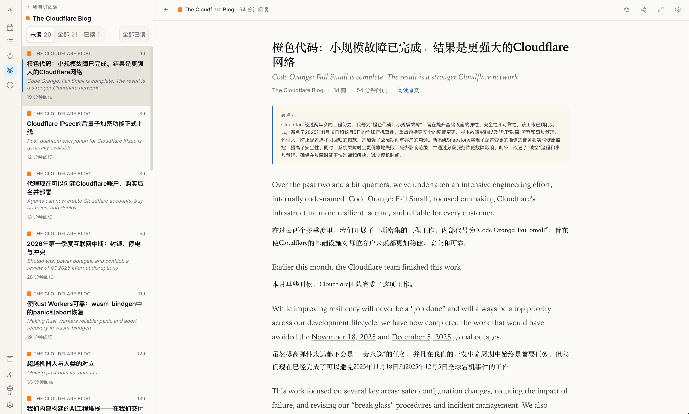
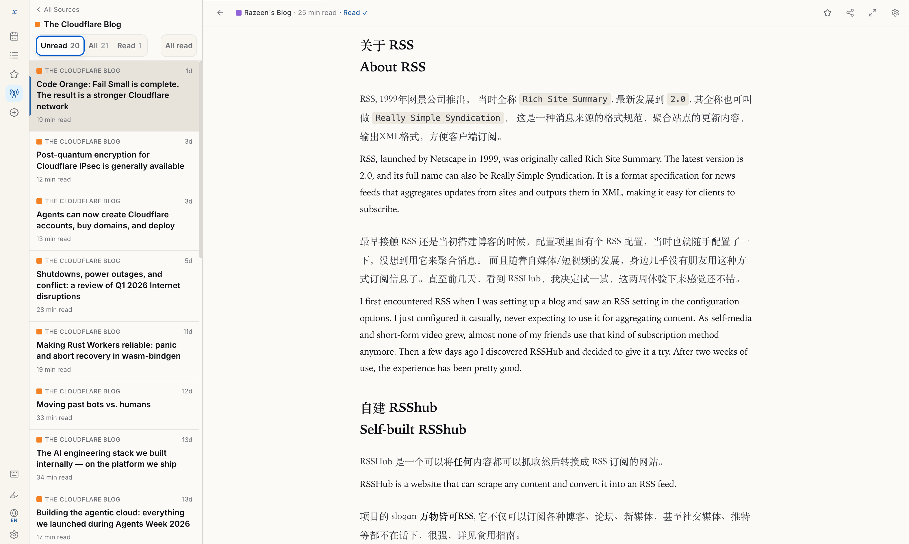
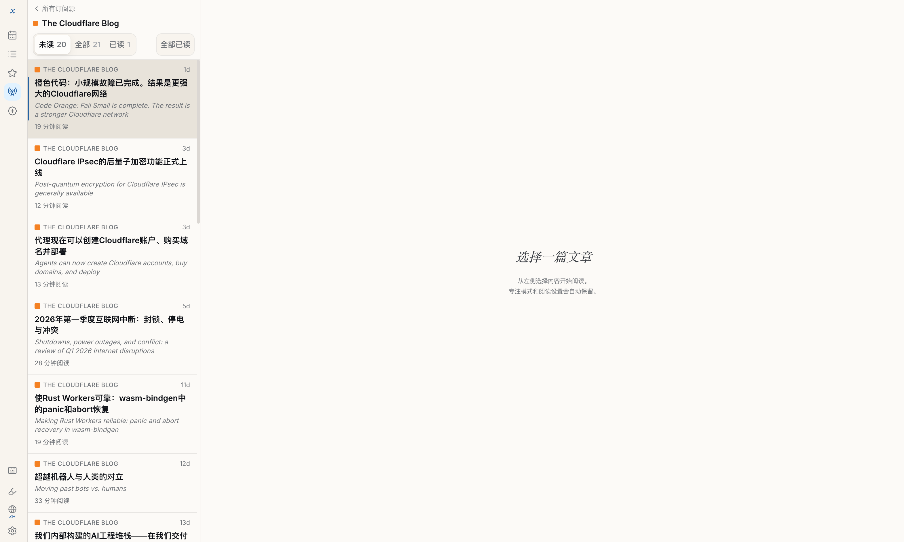
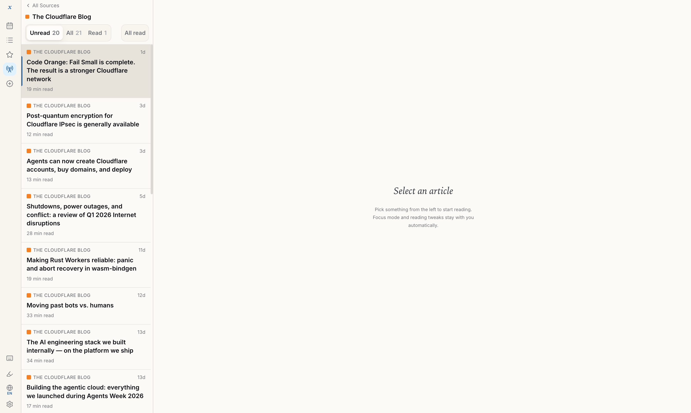

Read the world
in your language.
用你的语言
阅读全世界
A self-hosted RSS reader with AI translation built in. Titles and paragraphs side-by-side in your language, three-bullet summaries on every article, full-text CJK search, and a Fever API for the client you already love. 一款内置 AI 翻译的自托管 RSS 阅读器。标题与段落双语并排呈现，每篇文章自动生成三条要点摘要，支持中日韩全文搜索，兼容 Fever API，无缝接入你喜爱的客户端。


Every article, in two languages — at the same time. 每篇文章，双语同时呈现。
Titles auto-translate the moment a feed updates. Paragraphs render side-by-side, each one paired with its translation so context never breaks. Three to five key points summarize the gist before you decide to dive in. 订阅源更新时标题自动翻译。段落双语并排呈现，每段与其译文配对，上下文不会断裂。三到五条要点在你阅读之前先告诉你文章在讲什么。
- Paragraph-paired or stacked layout — pick per article 段落配对或堆叠布局——逐篇选择
- 3-5 bullet key points generated for every story 每篇文章自动生成 3-5 条要点
- Bring your own model — DeepSeek, Moonshot, GPT, or any OpenAI-compatible endpoint 自带模型——DeepSeek、Moonshot、GPT 或任何 OpenAI 兼容端点
- Cloudflare 完成"橙色代码"工程，提升基础设施弹性
- 避免了 2025 年 11 月与 12 月的两次全球故障重演
- 新系统通过分级故障隔离降低连锁影响
Over the past two and a bit quarters, we've undertaken an intensive engineering effort, internally code-named "Code Orange: Fail Small."
在过去两个多季度里，我们开展了一项密集的工程工作，内部代号为"Code Orange: Fail Small"。
While improving resiliency will never be a "job done," we have now completed the work that would have avoided two recent global outages.
虽然提升弹性永远不会是一份"完工的工作"，但我们现已完成了原本可以避免最近两次全球故障的工作。
Your feeds. Your server. Your data. 你的订阅。你的服务器。你的数据。
One Go binary, one Postgres. No SaaS account, no telemetry, no opaque cloud. AGPL-3.0 means the code is yours to read, fork, and audit — and the AI bills are yours to choose, too. 一个 Go 二进制，一个 Postgres。无需 SaaS 账号，无遥测，无黑盒云服务。AGPL-3.0 意味着代码完全属于你——可阅读、可 fork、可审计，AI 费用也由你自己决定。
- Single static binary, ~28 MB 单一静态二进制，约 28 MB
- Postgres for storage — pick your own host Postgres 存储——自选托管方式
- Zero analytics, zero phone-home 零分析追踪，零回传数据
$ docker compose up -d
[+] Running 2/2
✔ postgres Started 1.2s
✔ xreader Started 2.0s
# Open the setup wizard
$ open http://localhost:3000
→ Welcome to xReader. Add your first feed.
Bring the client you already love. 接入你最爱的客户端。
xReader speaks the Fever API end-to-end. That means Reeder, NetNewsWire, Unread, Fiery Feeds — the apps already on your phone — can read, mark, and star without changes. xReader 全面实现了 Fever API。Reeder、NetNewsWire、Unread、Fiery Feeds——这些你手机上已有的应用，无需任何修改即可阅读、标记和收藏。
- Drop-in replacement for any Fever-compatible app 即插即用，兼容所有 Fever 客户端
- Read state syncs both ways instantly 已读状态双向即时同步
- Translation + key points still available in the web reader 翻译 + 要点摘要在网页阅读器中始终可用
A reader that gets out of the way. 不打扰你的阅读器。
Warm paper background, serif Chinese alongside Newsreader Latin, line-height tuned per script. Keyboard-first, with margins that breathe. 温暖的纸张背景，中文宋体与英文衬线字体并列，逐语种调优行高。键盘优先，留白从容。


From git clone to first article in two minutes. 从 git clone 到第一篇文章，两分钟。
Compose up 启动容器
Pull the image, start the binary alongside Postgres. No external dependencies, no build step. 拉取镜像，与 Postgres 一起启动。无外部依赖，无构建步骤。
Open the wizard 打开配置向导
Pick a language pair, paste an OpenAI-compatible API key, set your admin password. 选择语言对，粘贴 OpenAI 兼容 API 密钥，设置管理员密码。
Add your feeds 添加订阅源
Paste a URL, drop in an OPML, or point any Fever client at your new server. Read. 粘贴 URL、导入 OPML，或将 Fever 客户端指向你的新服务器。开始阅读。
Boring tech, on purpose. 刻意选择无聊的技术。
Picked for longevity, not novelty. You'll be able to deploy this five years from now without rewriting a thing. 选择经久耐用，而非追逐新潮。五年后你依然可以直接部署，无需重写任何一行。
Backend
Go 1.25, single static binary, embedded migrations. Go 1.25，单一静态二进制，内嵌数据库迁移。
Frontend
Next.js 15, static export embedded in the Go binary. Next.js 15，静态导出嵌入 Go 二进制。
Storage
Postgres 16 with full-text CJK search, no plugins. Postgres 16，支持中日韩全文搜索，无需插件。
AI Provider
OpenAI-compatible — DeepSeek, Moonshot, one-api, OpenRouter. OpenAI 兼容——DeepSeek、Moonshot、one-api、OpenRouter。